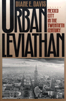

<body bgcolor="#FFFFFF" text="#000000" link="#0000FF" vlink="#CC0000" alink="#CC0000"><center><hr width="350" size="1" align="center" noshade>The story of crippling overdevelopment in Mexico's economic and social center<hr width="350" size="1" align="center" noshade><p><a href="https://cdcshoppingcart.uchicago.edu/Cart/ChicagoBook.aspx?ISBN=9781566391504&&PRESS=temple" target="_top">Buy this book!</a> | <a href="https://cdcshoppingcart.uchicago.edu/Cart/Cart.aspx?PRESS=temple" target="_top">View Cart</a> | <a href="https://cdcshoppingcart.uchicago.edu/Cart/Cart.aspx?PRESS=temple" target="_top">Check Out</a></p><p></p></center><!--none//--><h1>Urban Leviathan</h1>
<H2>Mexico City in the Twentieth Century</H2>
<h3>Diane E. Davis</h3>
<P>cloth 1-56639-150-4 $80.50, Jun 94, <FONT COLOR=#990033>Out of Stock Unavailable</FONT>
<br>paper 1-56639-151-2 $41.95, May 94, <FONT COLOR=#990033>Available</FONT>
<br>Electronic Book 1-43990-485-5 $41.95 <FONT COLOR=#990033>Out of Stock Unavailable</FONT>
<BR> 424 pp
6x9.25
10&nbsp;tables 2&nbsp;figures 28&nbsp;halftones
</P><BLOCKQUOTE><I>"This splendid book makes a truly innovative contribution to the literature on social and political change in Latin America. Davis demonstrates compellingly how a focus on local level processes can lead to a new understanding of politics a the national level."</I>
<br>&#151<b>Evelyne Huber</b>, The University of North Carolina at Chapel Hill<I></I></BLOCKQUOTE>
<p>Why, Diane Davis asks, has Mexico City, once known as the city of palaces, turned into a sea of people, poverty, and pollution? Through historical analysis of Mexico City, Davis identifies political actors responsible for the uncontrolled industrialization of Mexico's economic and social center, its capital city. This narrative biography takes a perspective rarely found in studies of third-world urban development: Davis demonstrates how and why local politics can run counter to rational politics, yet become enmeshed, spawning ineffective policies that are detrimental to the city and the nation.
<p>The competing social and economic demand of the working poor and middle classes and the desires of Mexico's ruling Partido Revolucionario Institutional (PRI) have led to gravely diminished services, exorbitant infrastructural expenditures, and counter-productive use of geographic space. Though Mexico City's urban transport system has evolved over the past seven decades from trolley to bus to METRO (subway), it fails to meet the needs of the population, despite its costliness, and is indicative of the city's disastrous and ill-directed overdevelopment. Examining the political forces behind the thwarted attempts to provide transportation in the downtown and sprawling outer residential areas, Davis analyzes the maneuverings of local and national politicians, foreign investors, middle classes, agency bureaucrats, and various factions of the PRI.
<p>Looking to Mexico's future, Davis concludes that growing popular dissatisfaction and frequent urban protests demanding both democratic reform and administrative autonomy in the capital city suggest an unstable future for corporatist politics and the PRI's centralized one-party government.
<BR>&nbsp;<h2>Excerpt</h2><P>Excerpt available at <a href="http://www.temple.edu/tempress">www.temple.edu/tempress</a></p>
<BR>&nbsp;<h2>Reviews</h2>
<p><I>"This impressively researched, historically and theoretically informed book should be read by all persons interested in the political economy of cities in general and of Mexico in particular. Diane Davis understands the subtleties of how political, social, and economic forces at the national and urban levels influence each other, both positively and negatively, and how they change over time."</I>
<br>&#151<b>Susan Eckstein</b>, Boston University
<p><I>"The illuminating tapestry of </I>Urban leviathan<I> is woven from the diverse elements of politics, geography, political economy, and public policy. The result is a study that forces us to rethink the places of cities in relationship to national institutions and practices, and makes the built environment central to our understanding of political and economic development."</I>
<br>&#151<b>Ira Katznelson</b>, Columbia University
<p><I>"</I>Urban Leviathan<I> is not only the fullest and most nuanced history of the world's largest metropolitan center, but stands as an original, deeply-researched exemplar of how to integrate urban analysis into the broader theories of class, development, and local/national politics. Davis's iconoclastic findings will certainly reshape our understanding of Mexico and its capital city. This book could very well transform our theories about what shapes capital cities."</I>
<br>&#151<b>Janet Abu-Lughod</b>, The New School for Social Research
<BR>&nbsp;<h2>Contents</h2><P>
<p>List of Abbreviations
<br>Preface and Acknowledgments
<br>1. Laying the Foundations
<br>2. The Urban Terrain of Postrevolutionary State Building, 1910-1929
<br>3. Mexico City Governance and the Move Toward Corporatism, 1929-1943
<br>4. Balancing Party Sectors Through Urban Administration, 1944-1958
<br>5. The PRI at the Crossroads: Urban Conflict Splits the Party, 1958-1966
<br>6. Rethinking Mexico City's Role in National Development, 1966-1973
<br>7. From Urban to National Fiscal Crisis, 1973-1982
<br>8. Urban Democratic Reform as Challenge to Corporatist Politics, 1982-1988
<br>9. Recasting the Dynamics of Urban and Political Change in Mexico
<br>Appendixes
<br>Notes
<br>Bibliography
<br>Index
</P><BR>&nbsp;<H2>About the Author(s)</H2>
<P><b>Diane E. Davis</b>, Associate Professor of Sociology and Historical Studies at the Graduate Faculty of Political and Social Science of the New School for Social Research, has written numerous articles on politics and economics in Mexico.</P>
<BR><H2>Subject Categories</H2>
<p><A HREF="/tempress/urban.html" TARGET="_top">Urban Studies</a>
<BR><A HREF="/tempress/latin.html" TARGET="_top">Latin American/Caribbean Studies</a>
</p>
<p align="center"><a href="https://cdcshoppingcart.uchicago.edu/Cart/ChicagoBook.aspx?ISBN=9781566391504&&PRESS=temple" target="_top">Buy this book!</a> | <a href="https://cdcshoppingcart.uchicago.edu/Cart/Cart.aspx?PRESS=temple" target="_top">View Cart</a> | <a href="https://cdcshoppingcart.uchicago.edu/Cart/Cart.aspx?PRESS=temple" target="_top">Check Out</a></p><p><font face="Arial" size="1"><a href="copyright.html" onMouseOver="window.status='Web Copyright Policy';return true;" onMouseOut="window.status=''" title="Web Copyright Policy">&copy;</a> 2015 <a href="http://www.temple.edu" target="new" onMouseOver="window.status='Link to Temple University home page';return true;" onMouseOut="window.status=''" title="Link to Temple University home page">Temple University</a>. All Rights Reserved. http://www.temple.edu/tempress/titles/1015_reg.html</font></p>